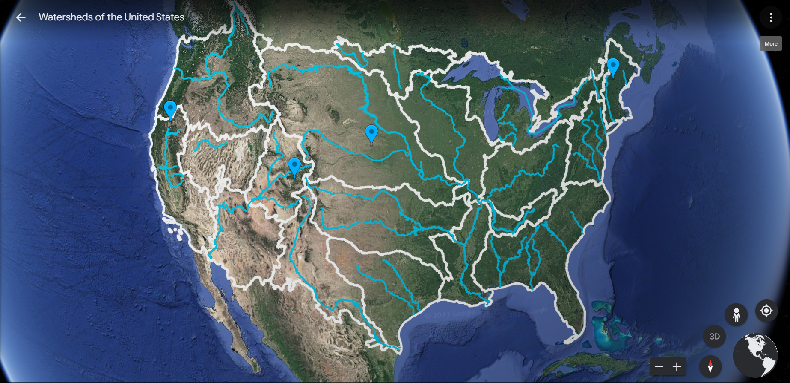

You can't be hydrolocal unless you have a good understanding of the amount of water you can collect and how much water you need. This week, we will collect data about a number of systems at the Living Lab and Learning Center, analyze the data to understand what it is telling us, and use that understanding to tell our local water story.
Here is the detailed schedule for this week:
-
Monday, 10 July: Watersheds and Hydrolocalism
- Maps and activities to understand watersheds and the watershed we live in
- A tour of the Watershed Management Group Living Lab and Learning Center to see hydrolocal practices in action
- Take a deeper dive into the watershed with Google Earth and USGS maps
-
Tuesday, 11 July: The Water Cycle
- Explore the parts of the water cycle
- Model the water cycle in Tucson using Minecraft
-
Wednesday, 12 July: Living Lab Monitoring
- Observe and record the status of systems at the Living Lab
- Use data from the Living Lab to visualize water supply and demand
-
Thursday, 13 July: Data collection
- Collect weather data with a micro:bit weather station
- Collect soil moisture data with a micro:bit
- Collect water conservation data with a micro:bit
-
Friday, 14 July: Project Day
- Use the data we collected to tell our water story
- Create data collection sensors and visualizations
- Share projects with friends and family
Sign up at the CoderDojo Community page.
Back to the Summer Worskhop 2023 page.
CoderDojo Tucson is a dojo of the CoderDojo Foundation, which is part of the Raspberry Pi Foundation.